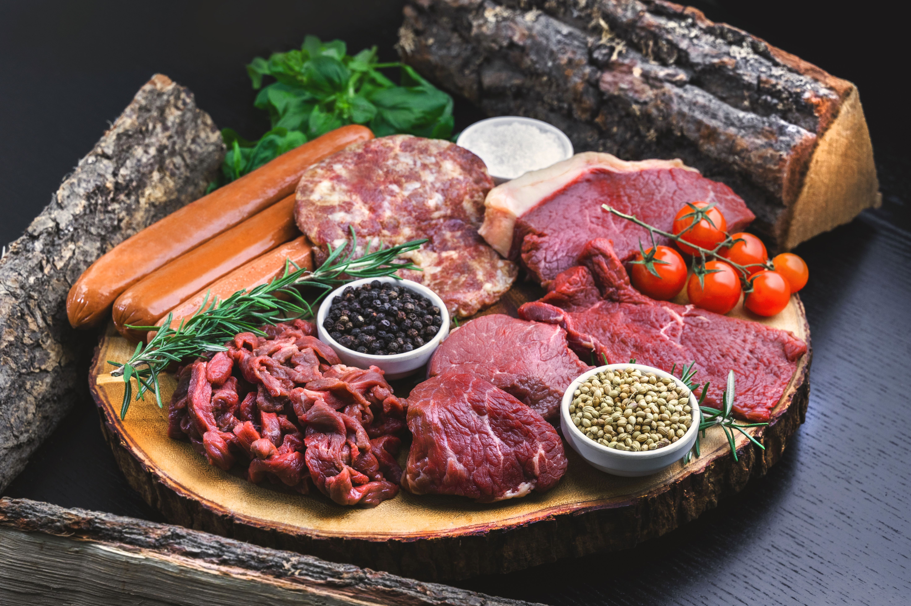
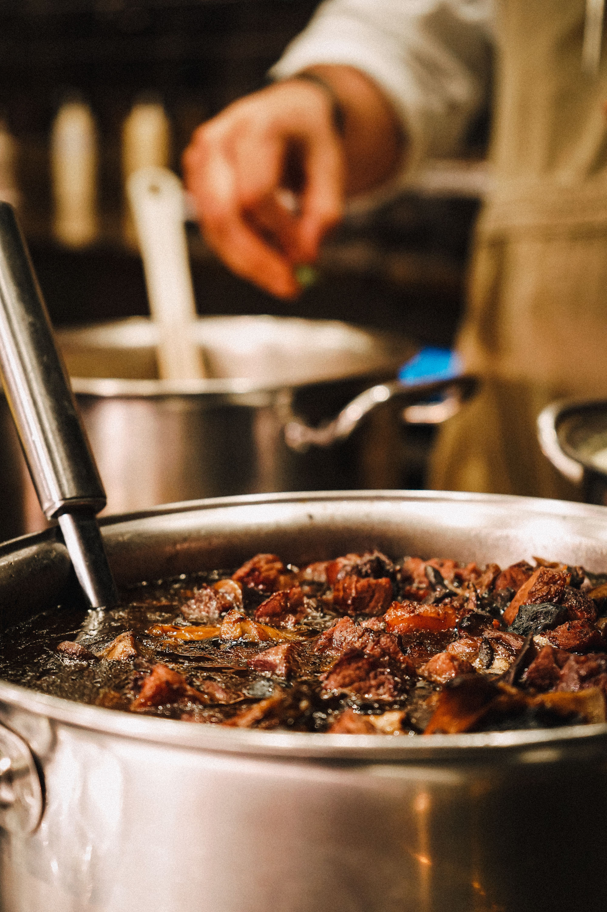
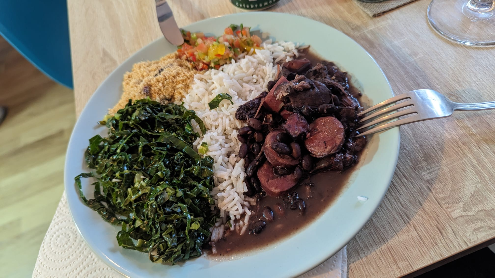

Feijoada brasileña
Descubre uno de los platos más emblemáticos de Brasil, conocido por su sabor intenso y su importancia en las reuniones familiares.

Historia y tradición
La feijoada es uno de los platos más representativos de la gastronomía brasileña. Se prepara principalmente con frijoles negros y diferentes tipos de carne de cerdo, y suele acompañarse de arroz blanco, col salteada, farofa y rodajas de naranja. Con el paso del tiempo, se ha convertido en un símbolo de la identidad culinaria y de las reuniones familiares en Brasil.
Aunque existe la creencia popular de que la feijoada nació entre las personas esclavizadas, que aprovechaban las partes menos valoradas del cerdo, varios investigadores consideran que esta explicación es una leyenda sin suficientes pruebas históricas. Según el historiador Ivan Alves Filho, el plato es el resultado de una evolución colectiva que combina ingredientes y tradiciones de diferentes orígenes.
La feijoada también presenta influencias de los guisos europeos, especialmente de la cocina portuguesa, donde era habitual cocinar legumbres con distintas carnes. A lo largo de los años, la receta incorporó nuevos ingredientes y variantes, hasta convertirse en uno de los grandes símbolos de la cocina brasileña.
Ingredientes principales
- 500 g de frijoles negros
- 400 g de carne de cerdo
- 200 g de chorizo o salchicha ahumada
- 150 g de panceta
- 1 cebolla
- 3 dientes de ajo
- 1 hoja de laurel
- Sal y pimienta al gusto
- Agua para la cocción
Cómo preparar la feijoada
- Deja los frijoles en remojo durante al menos 8 horas y escúrrelos.
- Cocina los frijoles en agua con las hojas de laurel hasta que comiencen a ablandarse.
- Añade las carnes y continúa la cocción hasta que estén bien hechas.
- Sofríe la cebolla y el ajo en una sartén y agrégalos a la preparación.
- Ajusta la sal y la pimienta, y cocina hasta obtener un caldo espeso.
- Sirve con arroz blanco, farofa, col salteada y naranja.
La feijoada en imágenes



Vídeo de preparación
Aprende más sobre la preparación tradicional de este plato brasileño.